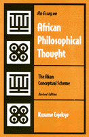

<body bgcolor="#FFFFFF" text="#000000" link="#0000FF" vlink="#CC0000" alink="#CC0000"><center><hr width="350" size="1" align="center" noshade>African philosopher Gyekye defines the main principles of a distinct African philosophy<hr width="350" size="1" align="center" noshade><p><a href="https://cdcshoppingcart.uchicago.edu/Cart/ChicagoBook.aspx?ISBN=9781566393836&&PRESS=temple" target="_top">Buy this book!</a> | <a href="https://cdcshoppingcart.uchicago.edu/Cart/Cart.aspx?PRESS=temple" target="_top">View Cart</a> | <a href="https://cdcshoppingcart.uchicago.edu/Cart/Cart.aspx?PRESS=temple" target="_top">Check Out</a></p><p></p></center><!--none//--><h1>An Essay on African Philosophical Thought</h1>
<H2>The Akan Conceptual Scheme</H2>
<H2>Revised Edition</H2>
<h3>Kwame Gyekye</h3>
<P>cloth 1-56639-383-3 $74.50, Sep 95, <FONT COLOR=#990033>Out of Stock Unavailable</FONT>
<br>paper 1-56639-380-9 $35.95, Aug 95, <FONT COLOR=#990033>Available</FONT>
<BR> 296 pp
5.5x8.25
2&nbsp;figures
</P><BLOCKQUOTE><I>"I find [Gyekye's] work brilliant in its approach, in its ideas, and in its argument. He asks courageous questions concerning the idea of an African philosophy and he not only succeeds in exposing the shallowness of some skeptical claims regarding that question but also clarifies the lines along which answers might properly be sought.... His work is the most massive in a new generation of thoughtful approaches to an important question regarding human culture." </I>
<br>&#151<b>W.E. Abraham</B>, University of California at Santa Cruz, and author of <I>The Mind of Africa</I><I></I></BLOCKQUOTE>
<p>In this sustained and nuanced attempt to define a genuinely African
philosophy, Kwame Gyekye rejects the idea that an African philosophy
consists simply of the work of Africans writing on philosophy. It must,
Gyekye argues, arise from African thought itself, relate to the culture
out of which it grows, and provide the possibility of a continuation of a
philosophy linked to culture. Offering a philosophical clarification and
interpretation of the concepts in the ontology, philosophical psychology,
theology, and ethics of the Akan of Ghana, Gyekye argues that critical
analyses of specific traditional African modes of thought are necessary to
develop a distinctively African philosophy as well as cultural values in
the modern world.
<BR>&nbsp;<h2>Excerpt</h2><P>Excerpt available at <a href="http://www.temple.edu/tempress">www.temple.edu/tempress</a></p>
<BR>&nbsp;<h2>Reviews</h2>
<p><i>"The author builds an impressive case for an indigenous African philosophy which is different from but not inferior to European philosophy. This text is valuable because [of its] insights into the relationship between life and thought, philosophy and experience." </i>
<BR>&#151<B>James H. Evans, Jr.</B>, <i>Religious Studies Review</i>
<p><I>"[A] wonderful starting point for understanding black peoples on all sides of the Atlantic."</I>
<br>&#151<b><I>Colors Magazine</I></b>
<p><I>"...anyone interested in questions in the philosophy of culture&#151especially, though by no means only, in Africa&#151should profit from Gyekye's work... This book is rewarding reading."</I>
<br>&#151<b>Kwame Anthony Appiah</b>, <I>Times Literary Supplement</I>
<BR>&nbsp;<h2>Contents</h2><P>
<p>Preface to the Revised Edition
<br>Acknowledgments to the Revised Edition
<br>Preface to the First Edition
<br>Acknowledgments to the First Edition
<br>Guide to the Pronunciation of Akan Words
<p><b>Part I: The Question of Philosophy in African Culture</b>
<br>1. On the Denial of Traditional Thought <I>as</I> Philosophy
<br>2. Philosophy and Culture
<br><I>Sources of African Philosophical Thought &#149
Collective and Individual Thought &#149
Language and Philosophical Thought &#149
On Defining African Philosophy: Some Proposals</I>
<br>3. Methodological Problems
<br><I>False Impressions about the Unwritten Character of African Traditional Philosophy &#149
Difficulties Besetting the Study of African Traditional Philosophy</I>
<p><b>Part II: The Akan Conceptual Scheme</b>
<br>4. The Akan Conception of Philosophy
<br>5. Concepts of Being and Causality
<br><I>God and the Other Categories of Being &#149
Causality</I>
<br>6. The Concept of a Person
<br><I></I>Okra<I> (Soul) &#149
</I>Sunsum<I> (Spirit) &#149
Relation of </I>Okra<I> and </I>Sunsum<I> &#149
Relation of </I>Okra<I> (Soul) and </I>Honam<I> (Body) &#149
Akan Psychology and Freud &#149
Conclusion</I>
<br>7. Destiny, Free Will, and Responsibility
<br><I>Basis of Belief in Destiny &#149
Nature of the Concept &#149
Causality, Fate, Free Will, and Responsibility &#149
The Problem of Evil</I>
<br>8. Foundations of Ethics
<br><I>Religion and Morality in Akan Thought &#149
The Social and Humanistic Basis of Akan Morality</I>
<br>9. Ethics and Character
<br><I>The Akan Word for "Ethics" &#149
The Centrality of Character (</I>Suban<I>) in Akan Ethics</I>
<br>10. The Individual and the Social Order
<br><I>Communalism as a Social Theory &#149
The Tensions of Individualism</I>
<br>11. Philosophy, Logic, and the Akan Language
<br><I>The Mind-Body Problem &#149
Time &#149
Existence, Predication, and Identity &#149
The Ontological Argument &#149
Subject and Predicate &#149
Conclusions</I>
<p><b>Part III: Toward an African Philosophy</b>
<br>12. On the Idea of African Philosophy
<br><I>The Need not to Generalize &#149
Common Features in African Cultures &#149
The Community of Cultural Elements and Ideas &#149
Conclusion: The Legitimacy of Talking of African Philosophy</I>
<p>Notes
<br>Select Bibliography
<br>Name Index
<br>Subject Index
</P><BR>&nbsp;<H2>About the Author(s)</H2>
<P><b>Kwame Gyekye</b>, Professor of Philosophy at the University of Ghana, is currently a Visiting Professor of Philosophy and African American studies at Temple University. He is the author of numerous articles and books, including <i>The Unexamined Life: Philosophy and the African Experience</i>.</P>
<BR><H2>Subject Categories</H2>
<p><A HREF="/tempress/philosophy.html" TARGET="_top">Philosophy and Ethics</a>
<BR><A HREF="/tempress/african.html" TARGET="_top">African American Studies</a>
<BR><A HREF="/tempress/african_studies.html" TARGET="_top">African Studies</a>
</p>
<p align="center"><a href="https://cdcshoppingcart.uchicago.edu/Cart/ChicagoBook.aspx?ISBN=9781566393836&&PRESS=temple" target="_top">Buy this book!</a> | <a href="https://cdcshoppingcart.uchicago.edu/Cart/Cart.aspx?PRESS=temple" target="_top">View Cart</a> | <a href="https://cdcshoppingcart.uchicago.edu/Cart/Cart.aspx?PRESS=temple" target="_top">Check Out</a></p><p><font face="Arial" size="1"><a href="copyright.html" onMouseOver="window.status='Web Copyright Policy';return true;" onMouseOut="window.status=''" title="Web Copyright Policy">&copy;</a> 2015 <a href="http://www.temple.edu" target="new" onMouseOver="window.status='Link to Temple University home page';return true;" onMouseOut="window.status=''" title="Link to Temple University home page">Temple University</a>. All Rights Reserved. http://www.temple.edu/tempress/titles/1241_reg.html</font></p>